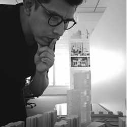

About Me
A little about myself

BIO
I'm Danny Bentley a structural BIM Designer and developer at Skidmore Owings & Merrill for the last 9 years. I'm passionate about all things tech for Architecture, Engineering, and Construction (AEC).
I work with the Revit API to develop add-ins. I enjoy making workflows using Dynamo for our teams. I'm also an AR/VR and ML/AI enthusiast looking for ways to integrate this technology into the AEC discipline.
SOM | Skidmore, Owings & Merrill LLP
BIM Designer and Strucrtural Drafter
Aug 2010 - PRESENT
- Machine learning group
- Algorithms and scripts for complex geometry
- SOM digital deign leadership group
Forell/Elsesser Engineers, Inc
BIM and Structural Drafter
June 2009 - 2010
- Modeling complex geometry with Revit
- AutoCAD Lisp development
- Setup company Revit standards
De-Simone Consulting Engineers
BIM and Structural Drafter
June 2007 - June 2009
- Production of construction documents
- Management of drafting tasks and deadlines